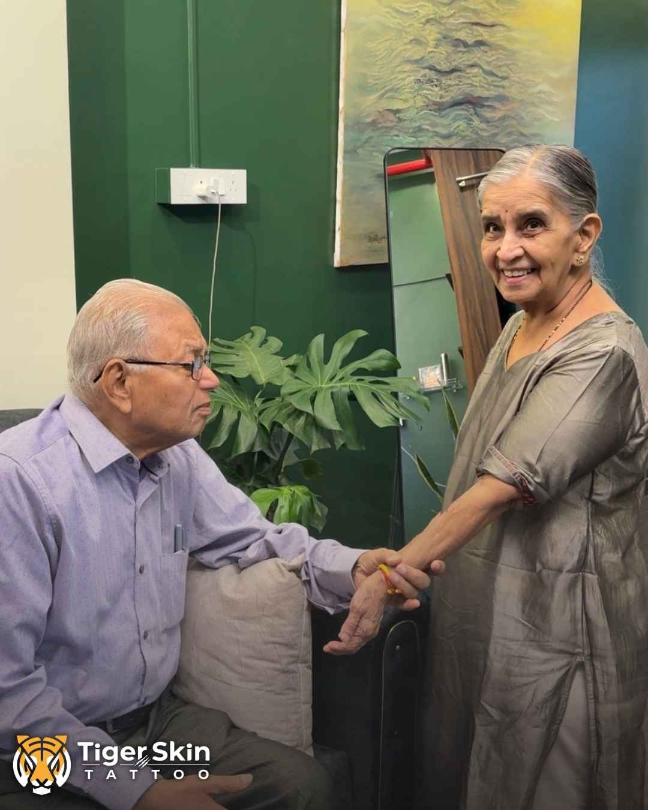
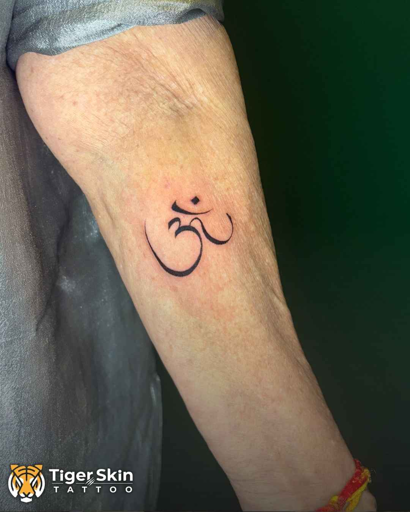

Mai and Ajoba in the studio, the afternoon of her first tattoo.
A few months ago, an 80-year-old woman walked into our studio in Naupada and asked for an Om. This week, Inked shared her story with the tattoo world.
If you haven't read it yet, Mai's story is here. The short version: she came in with her granddaughter Vedashree and her husband Ajoba, knew exactly what she wanted, and laughed through the entire session. When it was done, the two of them looked at me and said, in Marathi, "Tumhch sagl changlch honar ahe." Everything good will happen for you.
We posted the reel because we couldn't not post it. It went past a million views. And then Inked, one of the most widely read names in tattooing, featured it on their Instagram. See the Inked post →
What a feature like this means to a studio like ours
Inked has spent years putting the world's tattoo culture in front of people. Seeing a reel shot in a small studio on the first floor at Hariniwas Circle, Thane, alongside that work, is something none of us in the studio expected when we opened the doors this March.
But I want to be honest about why this one landed. It wasn't the linework. An Om is a simple design. It wasn't the camera work either. It was Mai. An 80-year-old woman deciding, calmly and completely on her own terms, to do something for herself. That is what people stopped scrolling for.
That's the part I'm proudest of. Not that our work was seen, but that the moment was handled with the care it deserved: a quiet room, no rush, the people she loves beside her, and a design drawn for her and nobody else.

Mai's Om. Small, clean, and exactly what she asked for.
What stays the same
Nothing about how we work changes because of a feature. Every client still starts with a conversation. Every design is still drawn from scratch for the person wearing it. Every session still gets one prepared station, one artist's full attention, and as much time as the piece needs.
Mai reminded us why that matters. People don't come to us for a tattoo. They come with something they want to carry: a belief, a person, a pet, a moment. Our job is to get that right, whether you're 18 or 80.
Thank you
To Mai and Ajoba, for trusting us with something so personal. To Vedashree, who has been with us for years and brought them in. To everyone who shared the reel and wrote about their own grandparents in the comments. And to Inked, for passing her story on.
Changlch honar ahe. She was right.
Have something you want to carry?
Every tattoo at Tiger Skin starts with a conversation, not a catalogue. Consultation is always free.
Call the Studio WhatsApp Us